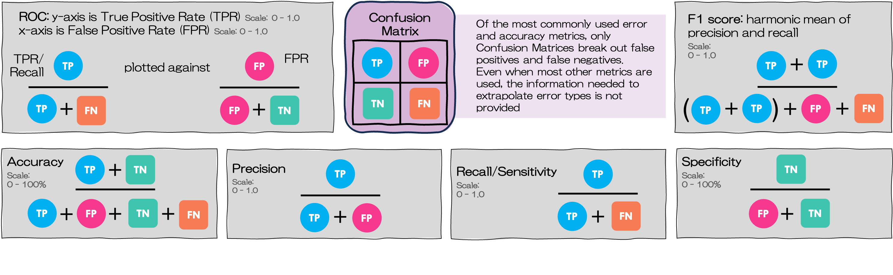
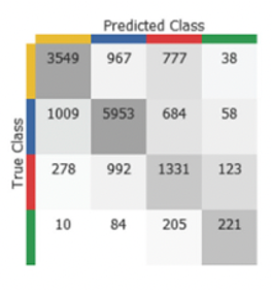
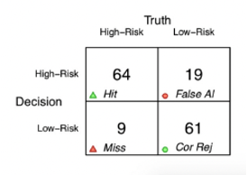
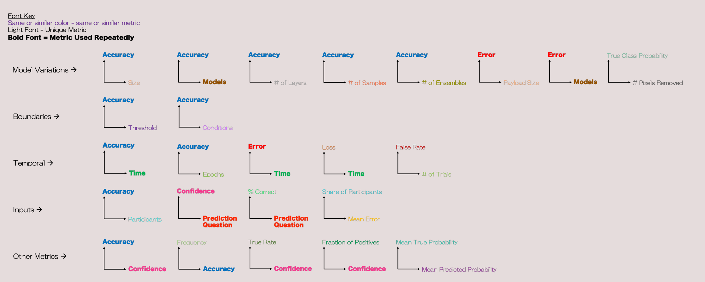
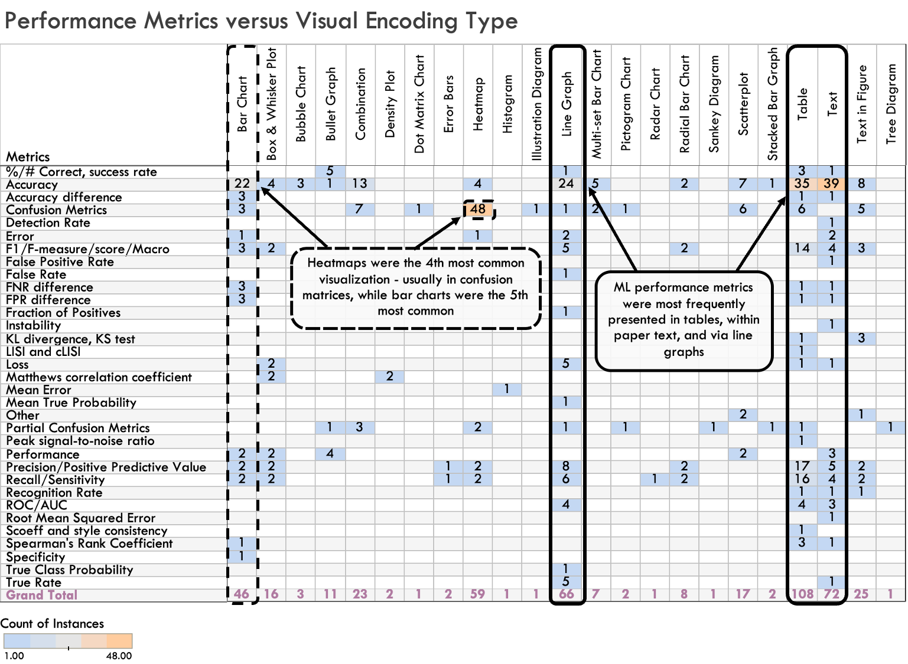
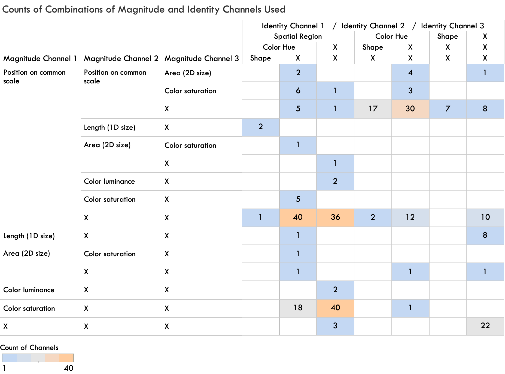

TP
True positive
(correct)
(correct)
70
The machine learning performance metrics you ecounter — accuracy, precision, recall, F1 — are built from just four main numbers. Move them below and watch each metric recompute. Below, we walk through our survey of visualization community machine learning papers exploring how the community approaches presenting these metrics.
To understand the state of the art in model error and accuracy visualization and compare design choices, we survey leading visualization papers in this space. We identify key difficulties in conveying the nuance between different classification errors and how selected visualization designs addressed or aggravated these challenges.We also provide an overview of the design choices made in presenting error and accuracy to various audiences. We find the variety of formats and styles chosen to communicate these performance metrics spans both model types and topic areas, complicating or preventing comparison. Based on this fragmentation, we call for reflection on how to balance novelty with comparability when differentiating between types of errors.
Machine learning models increasingly make or shape consequential decisions, so the way we report their performance matters. Yet across the visualization literature, many pick different metrics and different visual representations to show essentially the same information in different ways. To explore this design space, we surveyed 68 ML papers published in data visualization venues (IEEE TVCG, ACM CHI, and ACM IUI between 2019 and 2023), coding 490 individual error-and-accuracy representations for what they show and how they show it. The focus of many of these design choices favor local (project/paper) readability over global comparability. This is understandable, as these are ML papers in the visualization community, so emphasis is often on novel designs. Still, even use of the same metrics and charts, we found a lot of variability - confusion matrices sometimes showing ground truth on the y-axis, sometimes on the x-axis, if labeled at all, and accuracy and other metrics presented in a variety of charts where axis selection can vary.
Any binary prediction lands in one of four buckets — the cells you were just dragging. A TP is a real positive the model caught; a FN is a real positive it missed; a FP is a false alarm; and a TN is a negative correctly left alone.
The confusion matrix is special precisely because it keeps false positives and false negatives separate. Almost every other metric collapses these four counts into a single number — which is convenient, and supports a certain perspective, but removes the distinction we argue matters in high-risk and human impact settings. For example, in a cancer screening scenario, a false negative is a missed diagnosis; a false positive is an anxious week and an extra test. Those are not the same mistake, yet a lone accuracy score treats them as interchangeable.

Each metric below asks a different question of the confusion matrix. Precision asks “when the model classifies a positive, how often is it right?” Recall asks “of the things that were actually positive, how many did we catch?” They can pull in opposite directions, which is why F1 — their harmonic mean — is often reported as a single balanced score. Below are examples of how these four numbers combine across popular metrics. We display each metric in the format most frequently used for that metric in the surveyed papers (see Figure 7 for more details).
Cell shading uses color saturation on a spatial grid — the encoding used in 39 out of 48 (81%) of the heatmap-based confusion matrices across the surveyed papers. It is efficient for multiple class confusion matrices, but harder to compare across papers.
40 of the 68 papers included a full confusion matrix — though these differed on which axis is used for ground truth. This inconsistency, small as it seems, can make cross-paper comparison difficult. While we don't recommend strict standardization, some space for commonly accepted formats could help with comparability, so readers don't have to reorient with each new chart.
Which axis is “ground truth”?
Among the 40 papers using full confusion matrices, counts of how ground truth was presented.



Our findings, in short: enormous creativity, but often at the cost of comparability. Throughout this page, we explore that tension directly — by presenting both the breadth and depth of design creativity and the consequences of diverging approaches.

When the survey tallied every representation, the two most frequent ways to communicate model performance were actually text-based: a table and within a sentence of text. Purpose-built charts — line graphs, heatmaps, bar charts — came next. The chart below is shows the survey’s counts by presentation format.
How error & accuracy are presented
Count of each representation type across the 68 papers (Figure 4). Hover a bar.
Break the same data out by topic area and the pattern holds: tables and in-text numbers dominate ML-development papers, while bar charts, heatmaps, and line graphs recur across nearly every domain. Confusion matrices are almost always rendered as heatmaps — a more complex encoding than the bars and lines used for accuracy.

Coding each figure according using magnitude and identity channels from Munzner’s channel-effectiveness ordering, the survey found position on a common scale as the dominant magnitude channel (197 of 296 encodings) and spatial region dominating identity (170 of 296). Confusion-matrix heatmaps are the notable exception: they trade the highly effective position channel for color saturation, because that's what lets a single grid scale to many classes at once.

None of this is meant to discourage creativity. Novel designs — reimagined confusion matrices, network-graph views, flow diagrams of classifier confusion over time — are how the field progresses. But when every team invents its own picture, stakeholders lose the ability to weigh one model’s risks and limitations against another’s.
Our call to the community: keep exploring, but develop shared design guidelines so that one model's performance can be compared to another's when possible, and in a contextualized, clear and direct way.